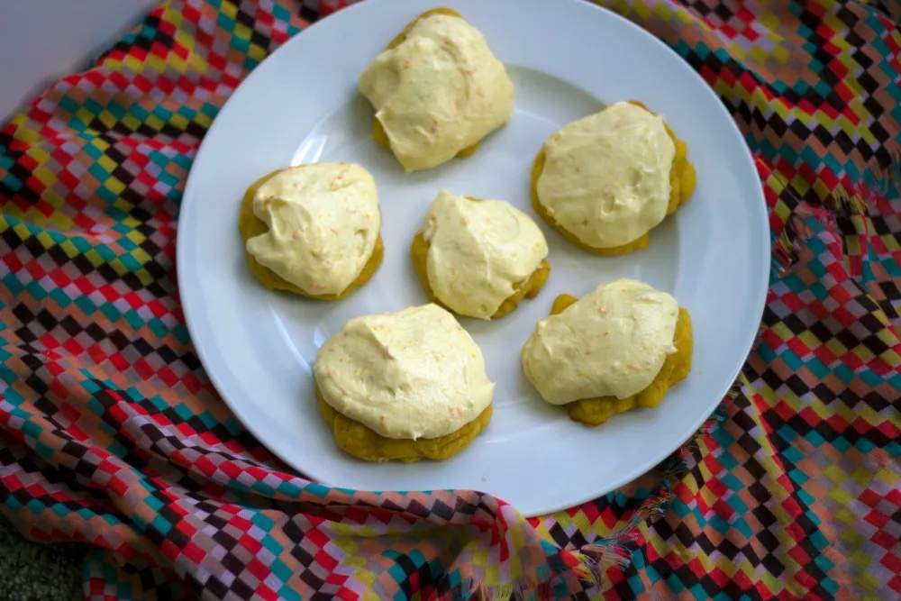

Carrot Cookies

Description
These carrot cookies are a Wetta family tradition; just ask my sister.
Originally from a Betty Crocker cookbook from the 70s, these were served at every family function growing up, usually from a wax-paper-lined shoebox my
grandmother had stored in the freezer. I do still prefer these frozen.
These soft, decadent, cake-like cookies are divisive: you either love them or you hate them. The subtle carrot flavor is offset by the sharp tang of
the orange frosting. Pro-tips: include extra orange zest and use carrot babyfood to save time.
Ingredients
For the cookie dough:
- 1 cup cooked, mashed carrots (or baby food)
- 3/4 cup sugar
- 1 cup butter
- 2 eggs
- 2 cups flour
- 2 tsp baking powder
- 1/2 tsp salt
For the frosting:
- 1 cup butter
- 4 cups powdered sugar
- 2 tsp vanilla
- juice and zest of one orange (or two for an extra kick)
Steps
- Preheat oven to 400F.
- Cream together butter, sugar, eggs, and carrots in standing mixer. Mix flour, baking powder, and salt. Gradually add dry mixture to wet mixture until combined. Do not overmix.
- Scoop about two tablespoons of dough onto un-greased cookie sheet. Leave about two inches between cookies. Bake for 8 minutes until cookies are soft to the touch. Cool on rack.
- For frosting, cream together butter and powdered sugar in standing mixer. Add vanilla, orange juice, and zest. Beat until combined.
Note: you may have extra frosting. Save for later or make a double batch of cookies. They're that good, anyway.